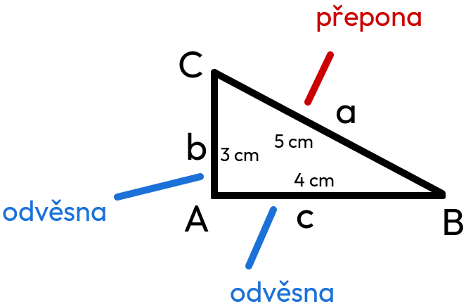

Pythagorova věta
Základy
přepona .... 5cm (je vždy nejdelší)
odvěsna .... 4cm
odvěsna .... 3cm
Věta
„Obsah čtverce sestrojeného nad přeponou pravoúhlého trojúhelníku se rovná součtu obsahu čtverců nad oběma odvěsnami.“
a znamená to:
a² + b² = c²
ALE V TROJÚHELNÍKU SESTROJENÉM NAHOŘE PLATÍ:
c² + b² = a²
Vypočítání trojúhelníku nahoře
přepona .... 5cm
odvěsna .... 4cm
odvěsna .... 3cm
c² + b² = a²
4² + 3² = 5²
16 + 9 = 25
25 = 25
Trojúhelník je pravoúhlý.